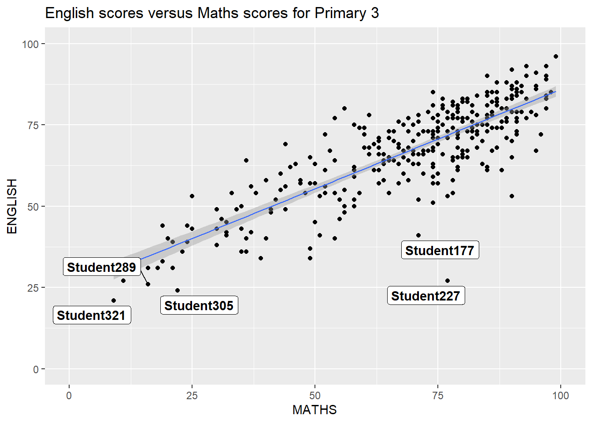
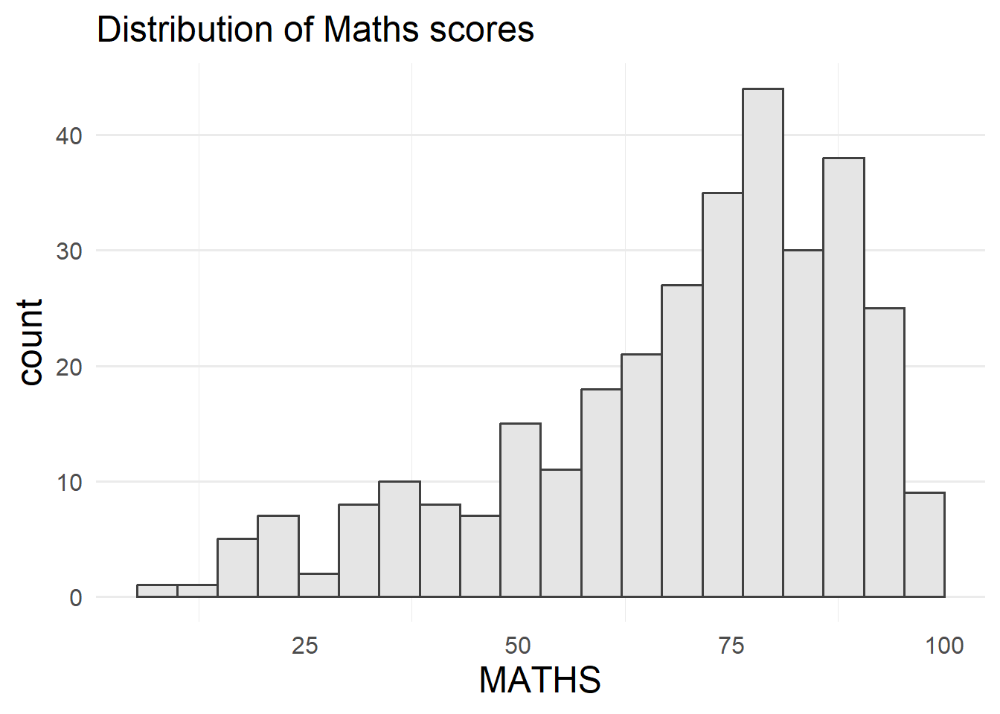
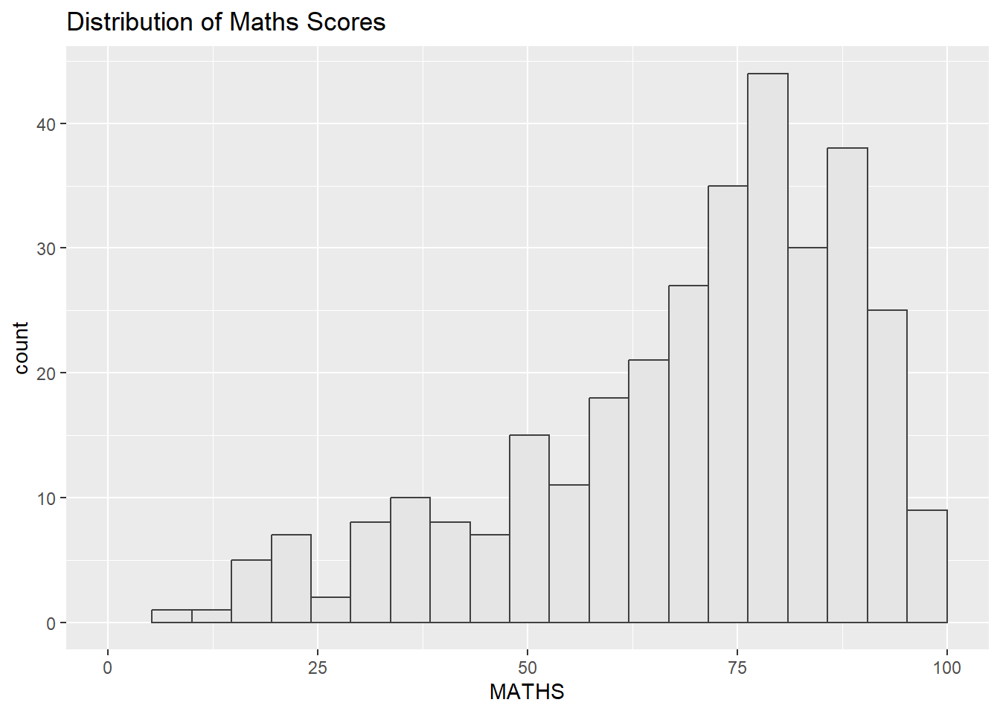
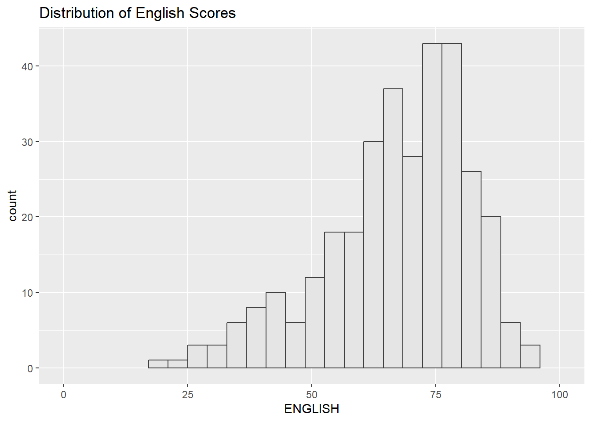
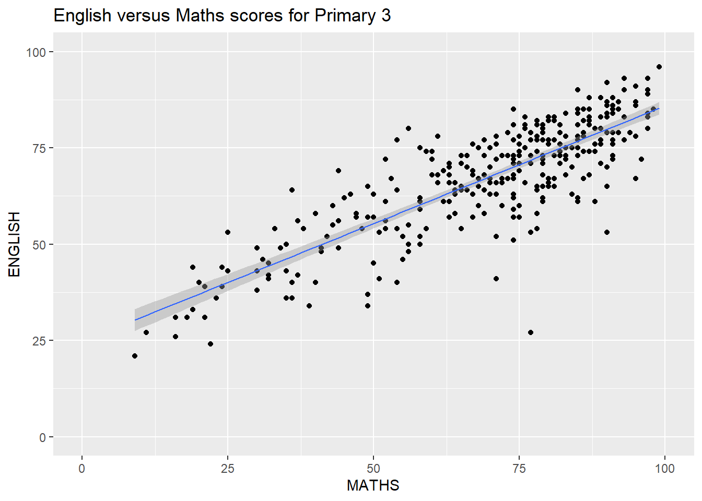
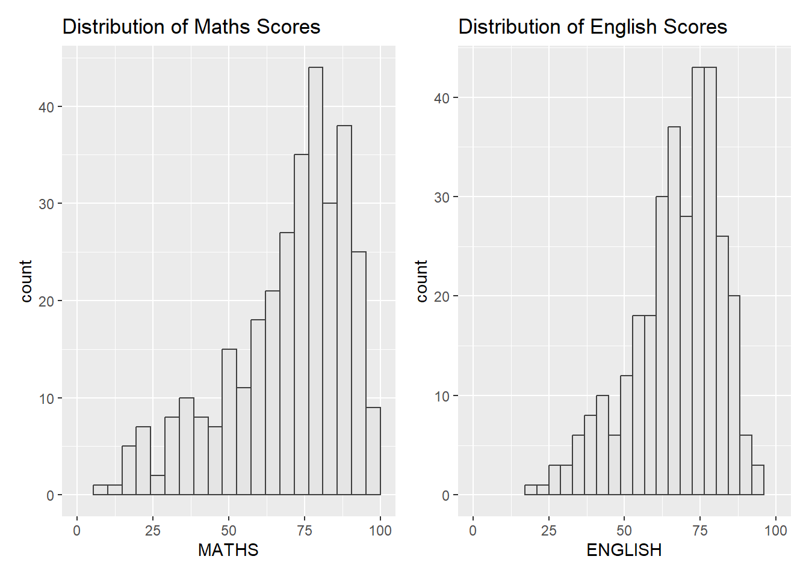
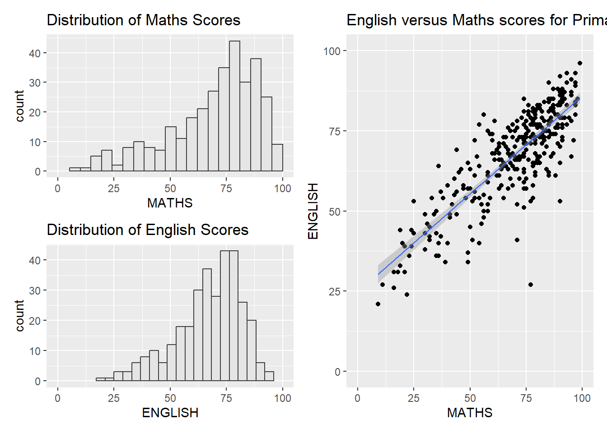
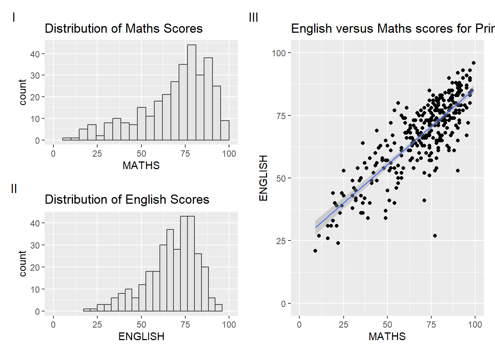
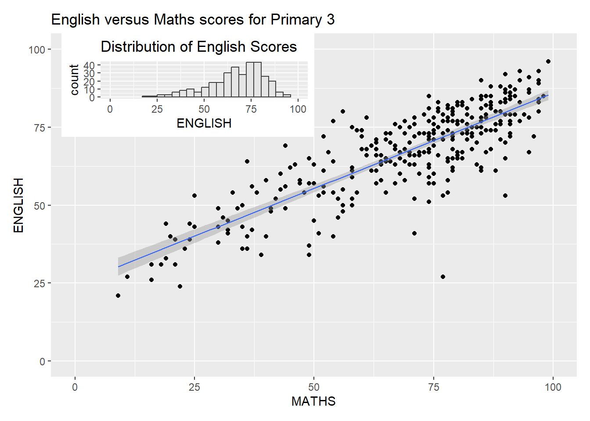
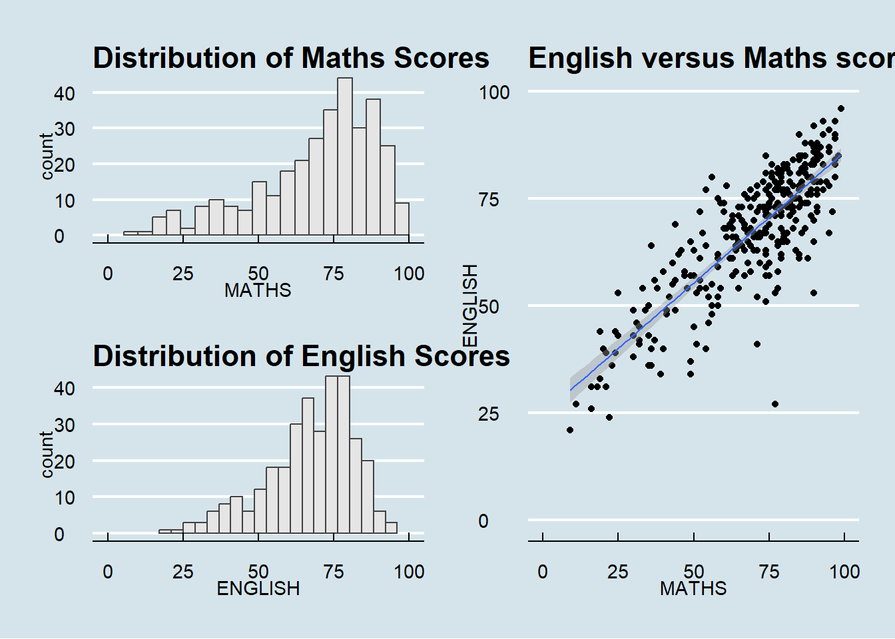

pacman::p_load(ggrepel, patchwork, ggthemes, tidyverse)Hands-on Exercise 2
2.1 Getting Started
2.1.1 Installing and loading the required libraries
2.1.2 Importing the data
The code chunk below imports exam_data.csv into R environment by using read_csv() function of readr package. readr is one of the tidyverse package.
exam_data <- read_csv("data/Exam_data.csv")Rows: 322 Columns: 7
── Column specification ────────────────────────────────────────────────────────
Delimiter: ","
chr (4): ID, CLASS, GENDER, RACE
dbl (3): ENGLISH, MATHS, SCIENCE
ℹ Use `spec()` to retrieve the full column specification for this data.
ℹ Specify the column types or set `show_col_types = FALSE` to quiet this message.There are a total of seven attributes in the exam_data tibble data frame. Four of them are categorical data type and the other three are in continuous data type.
- The categorical attributes are: ID, CLASS, GENDER and RACE.
- The continuous attributes are: MATHS, ENGLISH and SCIENCE.
2.2 Beyond ggplot2 Annotation: ggrepel
One of the challenge in plotting statistical graph is annotation, especially with large number of data points.
`geom_smooth()` using formula = 'y ~ x'
ggplot(data = exam_data,
aes(x = MATHS,
y = ENGLISH)) +
geom_point() +
geom_smooth(method=lm,
linewidth=0.5) +
geom_label(aes(label = ID),
hjust = 0.5,
vjust = -0.5) +
coord_cartesian(xlim = c(0,100),
ylim = c(0,100)) +
ggtitle("English scores versus Maths scores for Primary 3")2.2.1 Working with ggrepel
We simply replace geom_text() by geom_text_repel() and geom_label() by geom_label_repel
`geom_smooth()` using formula = 'y ~ x'Warning: ggrepel: 317 unlabeled data points (too many overlaps). Consider
increasing max.overlaps
ggplot(data = exam_data,
aes(x = MATHS,
y = ENGLISH)) +
geom_point() +
geom_smooth(method=lm,
linewidth=0.5) +
geom_label_repel(aes(label = ID),
fontface="bold",
max.overlaps = Inf) +
coord_cartesian(xlim = c(0,100),
ylim = c(0,100)) +
ggtitle("English scores versus Maths scores for Primary 3")2.3 Beyond ggplot2 Themes
ggplot2 comes with eight built-in themes, they are: theme_gray(), theme_bw(), theme_classic(), theme_dark(), theme_light(), theme_linedraw(), theme_minimal(), and theme_void().

ggplot(data = exam_data,
aes(x = MATHS)) +
geom_histogram(bins = 20,
boundary = 100,
color = "grey25",
fill = "grey90") +
theme_gray() +
ggtitle("Distribution of Maths scores")2.3.1 Working with ggtheme package
ggthemes provides ‘ggplot2’ themes that replicate the look of plots by Edward Tufte, Stephen Few, Fivethirtyeight, The Economist, ‘Stata’, ‘Excel’, and The Wall Street Journal, among others.
In the example below, The Economist theme is used.

ggplot(data = exam_data,
aes(x = MATHS)) +
geom_histogram(bins = 20,
boundary = 100,
color = "grey25",
fill = "grey90") +
theme_economist() +
ggtitle("Distribution of Maths scores")It also provides some extra geoms and scales for ‘ggplot2’.
2.3.2 Working with hrbthemes package
hrbrthemes package provides a base theme that focuses on typographic elements, including where various labels are placed as well as the fonts that are used.

ggplot(data = exam_data,
aes(x = MATHS)) +
geom_histogram(bins = 20,
boundary = 100,
color = "grey25",
fill = "grey90") +
ggtitle("Distribution of Maths scores") +
theme_classic()The second goal centers around productivity for a production workflow. In fact, this “production workflow” is the context for where the elements of hrbrthemes should be used.

ggplot(data = exam_data,
aes(x = MATHS)) +
geom_histogram(bins = 20,
boundary = 100,
color = "grey25",
fill = "grey90") +
ggtitle("Distribution of Maths scores") +
theme_minimal(base_size = 15) +
theme(axis.title = element_text(size = 18),
panel.grid.minor.y = element_blank(),
panel.grid.major.x = element_blank())2.4 Beyond Single Graph
It is not unusual that multiple graphs are required to tell a compelling visual story. There are several ggplot2 extensions provide functions to compose figure with multiple graphs. First, let us create three statistical graphics by using the code chunk below.

p1 <- ggplot(data = exam_data,
aes(x = MATHS)) +
geom_histogram(bins = 20,
boundary = 100,
color = "grey25",
fill = "grey90") +
coord_cartesian(xlim=c(0,100)) +
ggtitle("Distribution of Maths Scores")Next

p2 <- ggplot(data = exam_data,
aes(x = ENGLISH)) +
geom_histogram(bins = 20,
boundary = 100,
color = "grey25",
fill = "grey90") +
coord_cartesian(xlim=c(0,100)) +
ggtitle("Distribution of English Scores")Lastly, we will draw a scatterplot for English score versus Maths score by as shown below
`geom_smooth()` using formula = 'y ~ x'
p3 <- ggplot(data = exam_data,
aes(x = MATHS,
y = ENGLISH)) +
geom_point() +
geom_smooth(method = lm,
linewidth = 0.5) +
coord_cartesian(xlim=c(0,100),
ylim=c(0,100)) +
ggtitle("English versus Maths scores for Primary 3")2.4.1 Creating Composite Graphics: pathwork methods
In this section, I am going to share with you an ggplot2 extension called patchwork which is specially designed for combining separate ggplot2 graphs into a single figure.
Patchwork package has a very simple syntax where we can create layouts super easily. Here’s the general syntax that combines:
- Two-Column Layout using the Plus Sign +.
- Parenthesis () to create a subplot group.
- Two-Row Layout using the Division Sign
/
2.4.2 Combining two ggplot2 graphs
Figure in the tabset below shows a composite of two histograms created using patchwork. Note how simple the syntax used to create the plot!

p1 + p22.4.3 Combining three ggplot2 graphs
We can plot more complex composite by using appropriate operators. For example, the composite figure below is plotted by using:
- “/” operator to stack two ggplot2 graphs,
- “|” operator to place the plots beside each other,
- “()” operator the define the sequence of the plotting.
`geom_smooth()` using formula = 'y ~ x'
(p1 / p2) | p32.4.4 Creating a composite figure with tag
In order to identify subplots in text, patchwork also provides auto-tagging capabilities as shown in the figure below.
`geom_smooth()` using formula = 'y ~ x'
((p1 / p2) | p3) +
plot_annotation(tag_levels = 'I')2.4.5 Creating figure with inset
Beside providing functions to place plots next to each other based on the provided layout. With inset_element() of patchwork, we can place one or several plots or graphic elements freely on top or below another plot.
`geom_smooth()` using formula = 'y ~ x'
p3 + inset_element(p2,
left = 0.02,
bottom = 0.7,
right = 0.5,
top = 1)2.4.6 Creating a composite figure by using patchwork and ggtheme
Figure below is created by combining patchwork and theme_economist() of ggthemes package discussed earlier.
`geom_smooth()` using formula = 'y ~ x'
patchwork <- (p1 / p2) | p3
patchwork & theme_economist()